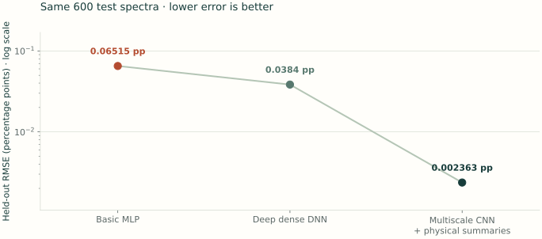

Physics → simulation → machine learning
From a measured spectrum to a trusted prediction.
Learn to extract vector polarization from nuclear magnetic resonance spectra. Build realistic training data, choose a capable but efficient network, and measure what its predictions get right—and where they fail.
What you are measuring
A polarized target has unequal populations of nuclear spin states. Its NMR spectrum contains information about that imbalance. We train a network to map a measured voltage sweep to the vector polarization, P.
For a spin-1 system, P = n+ − n−, where the populations sum to one. Our labels are fractions: P = 0.05 means 5% polarization.
Who this is for
You know basic Python, arrays, and introductory physics. You can start without prior neural-network experience. The reading and coding labs are self-contained.
All three learning phases concern vector extraction. The simulator uses a theoretical spin-1 Dulya/Pake powder doublet. Instrument settings and parameter ranges are teaching assumptions; matching them to measurements remains a separate scientific requirement.
Current status · 8 September 2026
| Workflow | Available now | Next milestone |
|---|---|---|
| Three experimental examples | Original single-site exercise, same-data butanol two-site comparison, and UVA-ND3 fits on its measured grid | Independent acquisition and model-sensitivity validation |
| 500-bin experimental lineshape | Five full-spectrum fits and 2,000 generated events across 100 configurations, with new simulator-known P labels | Implement compatible preprocessing, training and prediction without a required TE-area channel; then validate |
| 512-bin synthetic TE-area benchmark | Generation, training and prediction; a same-data MLP/DNN/CNN comparison with saved learning curves, plus the original three CNN runs | Experimental applicability requires independent validation |
The network labs and performance results below use the 512-bin benchmark. The current trainer and predictor do not accept the 500-bin matched dataset. Experimental noise, parameter coverage, and held-out accuracy remain under investigation. Read the status and next-step record for the implementation evidence and local verification limits.
Set up the tutorial and Python environment
Everything needed for the coding labs is in this repository. Clone it once and create an environment for NumPy, SciPy, PyTorch, and Matplotlib.
git clone https://github.com/zetanaut/NMR-AI.git
cd NMR-AI
python3 -m venv .venv
source .venv/bin/activate
python -m pip install -r requirements.txt
python -c "import torch; print(torch.__version__); print('CUDA:', torch.cuda.is_available())"Use Python 3.10 or newer. On Windows, activation is .venv\Scripts\activate. A CPU is enough to inspect data and run a small example; larger training runs benefit from a GPU. Use the official PyTorch installer for your hardware.
Run all lab commands from NMR-AI/. Scripts live in tools/; generated data and models go into local-results/. No other repository or pre-trained checkpoint is required.
The page's plots include small, precomputed teaching examples. You can regenerate the examples with the scripts below. These simulated results demonstrate the workflow; they are not experimental accuracy measurements.
Phase one · Data generation
A network can only learn the experiment you give it.
Start with the physical measurement model, match it to development data, characterize its noise, and sample the operating conditions the estimator will encounter.
S(f; P) = Vdet(f, χ(P)) − B(f)
Vmeasured(f) = B(f) + S(f; P) + ε(f)
The same circuit generates the baseline and signal-on response. Absorption changes coil losses; dispersion changes reactance. The cable and detector phase transform both. The nuclear response is included once, through complex susceptibility—not added again afterward.
Practical 01A · Derive and fit the Q-curve →
The practical starts from Fig. 1 and Eqs. (1)–(14) of Seay, Fernando, and Keller. It covers frequency and voltage conventions, passive parameter bounds, multi-start fitting, duplicate records, residual plots, and parameter identifiability. A close overlay is the beginning of validation, not its conclusion.
Look inside a generated spectrum
Generated P = 5% example. Voltage is in V; vertical scales change between views.
An explicitly specified deuteron operating point, not a measured instrument calibration. The viewer subtracts the noiseless circuit baseline to expose the signal. Training uses a separate reference with its own noise.
1. Connect spin populations to a real powder lineshape
For spin-temperature populations, tensor polarization is Q = 2 − √(4 − 3P²), and the transition population differences are (P + Q)/2 and (P − Q)/2. The two powder branches come from quadrupolar orientation distributions, with horns near normalized frequency ±1 and shoulders near ±2. They are not isolated Gaussian peaks.
tools/lineshape.py analytically integrates a complex Lorentzian over powder orientations and numerically averages over azimuth. Its real part is dispersion and its negative imaginary part is absorption. Normalization is on the infinite detuning axis: changing the sweep window does not artificially rescale the susceptibility.
Widths, asymmetry, sign, and calibration
Use x = (f − f₀)/split, with frequencies in the same units. The Lorentzian half-width is g × split_mhz; eta is EFG asymmetry, distinct from the coil filling factor. Spin weights remain finite at P = 0 and ±1. This lab models a single quadrupolar site under spin temperature, not independently driven tensor polarization.
The susceptibility amplitude coefficient is an explicit setup parameter. We obtain the area calibration from an independent thermal-equilibrium reference: Ccal = PTE / ∫STE(f)/f df. It does not come from the enhanced spectrum's unknown label. Detector phase and inversion determine voltage polarity.
See Dulya et al. (1997) and the full physics notes.
2. Match the electronics and characterize the noise
The public measured baseline uses the owner's confirmed 500-bin grid: fⱼ = 32.3 + 0.0015287 j MHz, j = 0…499, with nominal center 32.7 MHz. The baseline practical enforces the known n=1, 3.580 m half-wave setup with a provisional ±3% trim. The constrained fit reaches limits and retains structured residuals; the page explains why it is not an accepted hardware calibration. Use tools/fit_tuned_baseline.py to fix known hardware quantities and constrain remaining unknowns. The main generator retains its existing 512-bin synthetic benchmark and 32.68 MHz circuit reference; it has not been resampled or calibrated from this fit.
The detector-noise interface accepts a full development-data covariance matrix in V²: ε ∼ Normal(0, Σ). It validates symmetry and positive semidefiniteness. The default is a white-Gaussian reference case with σ = 10⁻⁹ V, the nominal 10⁻⁶ mV scale discussed in the paper—not a measurement of the supplied baseline's noise.
Study repeat differences, autocorrelation, spectral density, tails, and coherent pickup. A baseline-fit residual can contain a resonance, drift, or model mismatch; do not automatically label its entire variance as electronic noise. A Gaussian covariance model cannot represent every interference process.
python tools/generate_data.py \
--num-samples 2000 --num-configurations 100 \
--coverage narrow --seed 42 \
--output local-results/smoke.npz
# With an independently estimated covariance on this 512-bin grid:
# add --noise-covariance development_covariance_v2.npyEq. (45) defines SNR as max(abs(clean signal)) / max(abs(noise)), excluding the baseline. A peak-signal/noise-SD ratio is a different metric. Correlated or coherent noise does not necessarily average down as independent noise does.
3. Vary identifiable physical parameters
| Quantity | How it enters | Evidence needed for experiment |
|---|---|---|
| RF voltage, tuning C, coil R/L, series R, cable length/loss, filling factor, susceptibility scale, detector phase | Jointly carried by one circuit configuration | Matched circuit fits and measured constraints; do not interpret degenerate fit coordinates as independent measurements. |
| Center, splitting, g, EFG η | Complex powder susceptibility | Material-specific lineshape fits; g > 0 and 0 ≤ η ≤ 1. |
| Vector P | Spin-transition populations | Labels cover the relevant signed range; here −25% to +25%. |
| Noise and baseline reference | Independent measurement noise; one shared reference per configuration | Noise covariance, averaging count, stability between reference and signal. |
| Area calibration | Known independent TE reference | TE temperature, detector response, and calibration uncertainty. |
The narrow/broad presets are controlled sensitivity studies, with broad excursions four times narrow ones. Their ranges are specified in code; they are not inferred from five measured traces. Fixed parameters remain explicit. Supply your own supported joint configurations with --configurations configurations.json.
4. Produce enough data and independent configurations
Increase event count and configuration coverage separately. A million noise realizations from one setting cannot teach a network how another circuit behaves. Use learning curves and held-out operating conditions to decide when more simulation is useful.
python tools/generate_data.py \
--num-samples 100000 --num-configurations 2000 \
--coverage broad --configuration-seed 91 --seed 99 \
--output local-results/broad_100k.npzNPZ files contain raw signals and independent baselines in V, per-event calibration, fractional P, configuration IDs, and the grid. Voltages are stored in float64 so subtraction preserves small signals. The JSON records the physical configurations, seeds, model version, and dataset hash. Use fresh output paths; existing files are protected.
The benchmark assumes a stable circuit between the reference and signal scan and an ideal TE calibration; reference noise is averaged over 16 sweeps by default. Calibration uncertainty, mechanical drift, and non-Gaussian pickup need separate experimental characterization and stress tests.
A circuit-validated, experimentally checked generator contract, supported noise and parameter distributions, and a reproducible dataset with independent configurations.
Phase two · Network design
Start with an MLP.
Add depth. Learn spectral structure.
Build three estimators, give them the same training data, and measure what each improvement buys you. Our progression moves from a basic dense network to a deeper DNN and a multiscale CNN with physical summaries.
A neural network is a sequence of adjustable transformations. Training chooses its weights so that predicted P agrees with known labels. A multilayer perceptron (MLP) connects each layer densely to the next. Here the first MLP has one hidden layer; the middle model is a deep dense neural network (DNN) with three hidden layers. A convolutional neural network (CNN) is also a DNN, with filters that share weights across frequency positions.
Every model receives the same (batch, 2, 512) input: raw voltage and TE-calibrated, reference-subtracted area contributions. Both channels use standardization fitted on the training rows. This worked comparison uses the existing 512-bin synthetic benchmark; the 500-bin experimental workflow has its own pending training contract.
1. Build a basic MLP
Flatten the two channels into 1,024 values, mix them into 64 hidden features, apply a nonlinear GELU activation, and produce one polarization estimate. Each hidden unit can use every input bin. This is a useful first reference because its data flow is easy to follow.
Code the one-hidden-layer MLP
__init__ defines the layers and forward passes a batch through them. This is the model used by --architecture mlp.
import torch
from torch import nn
class BasicPolarizationMLP(nn.Module):
def __init__(self):
super().__init__()
self.net = nn.Sequential(
nn.Flatten(),
nn.Linear(2 * 512, 64),
nn.GELU(),
nn.Linear(64, 1),
)
def forward(self, x):
return self.net(x)
model = BasicPolarizationMLP()
print(model(torch.randn(8, 2, 512)).shape) # torch.Size([8, 1])The random input only checks the shape. A usable prediction requires training and the saved preprocessing.
2. Add a deeper dense DNN
Now use hidden layers of 256, 128, and 64 units. Successive nonlinear transformations can express more complicated relationships among baseline shape, amplitude, and spectral structure. Every layer still uses dense connections; the model must learn positional relationships from the examples.
Code the three-hidden-layer DNN
The input and output contract stays the same. This is --architecture dnn; the extra capacity is judged using the same validation rows.
import torch
from torch import nn
class DeepPolarizationDNN(nn.Module):
def __init__(self):
super().__init__()
self.net = nn.Sequential(
nn.Flatten(),
nn.Linear(2 * 512, 256), nn.GELU(),
nn.Linear(256, 128), nn.GELU(),
nn.Linear(128, 64), nn.GELU(),
nn.Linear(64, 1),
)
def forward(self, x):
return self.net(x)
model = DeepPolarizationDNN()
print(model(torch.randn(8, 2, 512)).shape) # torch.Size([8, 1])More parameters do not guarantee a smaller error. The common training budget and saved learning curves make that tradeoff visible.
3. Use a multiscale CNN with physical summaries
Nearby frequency bins jointly describe peaks and shoulders. Convolution reuses a local filter across the sweep, while several filter widths and dilated residual blocks capture broader structure. Shared filters help with spectral shifts, although the complete estimator is not perfectly shift-invariant.
Optional stepping stone: code a compact 1D CNN
This smaller convolutional model shows how filters replace dense connections. It remains available as an additional control; the third model in our new comparison is the more capable multiscale architecture diagrammed below.
import torch
from torch import nn
class SmallPolarizationCNN(nn.Module):
def __init__(self):
super().__init__()
self.encoder = nn.Sequential(
nn.Conv1d(2, 16, kernel_size=7, padding=3),
nn.GELU(),
nn.AvgPool1d(2),
nn.Conv1d(16, 32, kernel_size=7, padding=3),
nn.GELU(),
nn.AdaptiveAvgPool1d(1),
)
self.head = nn.Linear(32, 1)
def forward(self, x):
features = self.encoder(x).squeeze(-1)
return self.head(features)
model = SmallPolarizationCNN()
example_batch = torch.randn(8, 2, 512)
print(model(example_batch).shape) # torch.Size([8, 1])
print(sum(p.numel() for p in model.parameters()))The numbers are untrained outputs. This model is available as --architecture compact. All four networks are defined in tools/nmr_lab.py; the factory build_model() selects the requested architecture.
The default PhysicsMultiscaleCNN combines learned filters with spectral summaries. The raw channel retains the voltage sweep. The second channel subtracts an independent reference and multiplies each bin by its trapezoidal df/f weight and TE calibration. Its sum is the conventional calibrated area estimate. Training-set standardization is then applied to both channels.
Different filter widths see different spectral scales. Dilation expands the context without proportionally increasing weights. Pooling compresses the frequency axis before the dense head. A ridge regression on 25 spectral summaries is fitted using training rows only, then frozen. Its 26 coefficients provide an initial estimate; a dense correction head adds an estimate from the learned convolutional features.
Keep physical information
Feature means and standard deviations are fitted on the training partition and reused later. Independently rescaling every spectrum to unit amplitude could erase the amplitude information needed to recover polarization.
Explain the source of the gain
This CNN combines shared filters with an explicit physical feature branch. Its accuracy measures both contributions together. Comparing it with the dense networks does not show how much of the gain comes from convolution alone.
One dataset. Three measured errors.
All three models use the same 6,000 broad-variation spectra: 4,788 training, 612 validation, and 600 test events. The same 240/30/30 configuration groups, two input channels, training-only scalers, batch-order seed, AdamW settings, and 80-epoch cap are used throughout. Each checkpoint minimizes validation MSE; the test rows are evaluated after fixing the comparison.

In this run, the DNN reduces test RMSE by a factor of 1.70 relative to the basic MLP. The CNN with physical summaries reduces it by a further factor of 16.25.
| Estimator | Validation RMSE | Test RMSE | Test bias | Test width | Test 95th |error| |
|---|---|---|---|---|---|
| Basic MLP | 0.09055 | 0.06515 | -0.00125 | 0.06513 | 0.12616 |
| Deep dense DNN | 0.04030 | 0.03840 | -0.00228 | 0.03834 | 0.07555 |
| Multiscale CNN + summaries | 0.00196 | 0.00236 | -0.00008 | 0.00236 | 0.00501 |
The CNN's result includes the contribution of its ridge estimate from physical summaries. This comparison measures the complete estimators. It does not isolate convolution, establish a universal ordering, or measure experimental polarization accuracy. The generator assumes ideal TE calibration and a stable, independently noisy reference.
Watch learning on the same data
Enable JavaScript to explore the saved learning curves. The error figure and table above remain available.
Verified against saved checkpoints, exact partition rows, training-only preprocessing, and prediction CSVs. Download the comparison record or error figure. The record includes every synthetic test prediction, hashes, settings, histories, parameter counts, and numerical reconstruction checks.
{kind=link}
Lab 02 · Reproduce the progression
Generate the broad-variation dataset once if it is absent. The comparison runner reads configs/model-comparison.json, trains the three declared architectures, and then evaluates their best validation checkpoints on the saved test partition. It saves each run's history, predictions, preprocessing, exact partition rows, and provenance.
python tools/generate_data.py --num-samples 6000 \
--num-configurations 300 --coverage broad \
--output local-results/qmeter/broad.npz
python tools/run_model_comparison.py
python tools/export_model_comparison.pyReuse an existing dataset rather than rerunning the first command. Existing outputs are protected. Use --runs-dir local-results/my-comparison on both comparison commands for a fresh run. For deliberate validation review, run --stage train first and --stage evaluate after fixing your choices. Keep test scores out of architecture and hyperparameter selection.
The comparison record documents the architectures, shared protocol, full metrics, and saved artifacts.
Measure the cost of all three architectures
Parameter counts are not latency measurements. Use batch size one for a live scan and larger batches for offline throughput. The helper uses PyTorch's benchmark timer, evaluation mode, and disabled gradient tracking.
for architecture in mlp dnn physics_multiscale; do
python tools/benchmark_network.py \
--architecture "$architecture" --device cpu --batch-size 1
doneThe helper times randomly initialized versions of the exact architectures. It excludes file loading, preprocessing, transfers, and startup. Divide batch time by batch size to report throughput cost per event; that is different from single-event latency. See the PyTorch benchmarking guide.
When calibration varies between events
Every event carries its independently determined calibration and reference baseline. Training and inference use the same make_features(). The generated reference is noisy and shared by configuration; the TE calibration is ideal in this benchmark. Real calibration errors remain a separate part of the error budget.
An architecture diagram, a fair comparison against a simpler model, and measured latency/throughput on the intended hardware—with a stated timing scope.
Phase three · Training & evaluation
Learn when to stop.
Then learn what the errors mean.
Training reduces a loss. Validation chooses a model. A held-out evaluation measures how that choice generalizes. These are different jobs.
Split by the source of variation
Several simulated spectra can share the same parameter configuration. If those near-relatives appear in both training and test data, a random row split can give an optimistic estimate of performance on unfamiliar configurations.
The tutorial trainer always groups by configuration_id, keeping each configuration entirely in one partition. The 80/10/10 proportions apply to groups; row proportions can differ. Check split.json. For stronger tests, also hold out acquisition periods or parameter families. A group split cannot test a missing noise process or repair an unrealistic simulator.
Match the training objective to the scientific target
The trainer uses mean squared error normalized by the training-label standard deviation strain. For a single P output, this constant rescaling preserves the absolute-MSE objective. A relative-error loss would weight small polarizations more strongly, which can conflict with an absolute-error target. Keep the training objective and the scientific acceptance criterion aligned.
Lab 03 · Train on the dataset from Lab 01
python tools/train_model.py \
--data local-results/smoke.npz \
--output-dir local-results/smoke_model \
--architecture physics_multiscale --epochs 20 --patience 8 \
--batch-size 128 --learning-rate 0.0001 --seed 42This small run checks the workflow. For a larger pilot, increase the dataset and epoch cap. Change one factor at a time: use --architecture compact with the same data and seed for an architecture comparison. The trainer selects CUDA when available; pass --device cpu for a CPU-only run.
Train long enough without chasing the training set
An epoch is one pass through the training data. A batch is the subset used for one optimizer update. The learning rate controls the step size. Our trainer uses AdamW with weight decay, dropout in the correction head, and a scheduler that reduces the learning rate when validation loss stalls.
Track both curves. Falling training loss with persistently rising validation loss suggests overfitting. If both remain high, consider underfitting, optimization trouble, or missing information. Early stopping limits training after a specified number of epochs without a new best validation value; it does not prove the model is correct. The trainer restores and saves the best validation checkpoint, not simply the last epoch.
The trainer saves model.pt, scaler.npz, config.json, split.json, history.csv, metrics.json, and test_predictions.csv. The prediction CSV retains configuration IDs for group-based analysis. Keep these files together. This version saves at the end of a completed run; an interrupted run may leave no checkpoint.
Accuracy and precision need separate numbers
Define the residual as truth minus prediction: ei = Pi − P̂i. Bias measures a systematic offset; width measures the spread around that offset. In this tutorial we use bias to quantify systematic accuracy and residual width to quantify precision. Accuracy more broadly concerns closeness to truth, so also report total error.
This is the paper's Eq. (38) convention. Saved metrics use fractional P; multiply by 100 for percentage points.
A positive value means the model underestimates P on average.
Residual standard deviation, not the standard error of the mean.
Combines offset and spread. It can be large for either reason.
This empirical identity is exact when width uses ddof=0, as the tutorial helper does. It does not require Gaussian residuals. Inspect a histogram, the 95th percentile of absolute errors, and performance by polarization and noise level: one width can hide outliers and systematic trends.
Put the numbers on a polarization scale
Absolute metrics are in fractional P. Multiply by 100 to obtain percentage points (pp). To express an error relative to a chosen nonzero reference P₀, divide the fractional error by |P₀| and multiply by 100.
100 × 0.0005 / 0.05 = 1% relative error at P₀ = 5%
The same absolute error is 5% relative at P₀ = 1%, and 0.25% relative at P₀ = 20%. Relative error is undefined at zero. A denominator floor can stabilize a diagnostic, but the result depends on that convention.
Interactive lab · idealized residuals
Move the bias. Change the width.
These controls describe a hypothetical Gaussian error distribution. They are a teaching model, not fitted experimental results. Watch how offset and spread combine into RMSE.
Residual e = P − P̂, in percentage points. Shading marks the ±0.05 pp absolute-error band; it is not a per-event guarantee.
Above the 0.05 pp RMSE target.
Think it through: can a narrow distribution still be inaccurate?
Yes. Set width to 0.010 pp and bias to 0.100 pp. Predictions cluster tightly, but far from truth. Conversely, zero bias with a broad width gives an unbiased but imprecise estimator. To reach the RMSE target, the combination of both contributions must fit the error budget.
Measure performance near the polarization you care about
Converting a pooled RMSE to “relative error at 5%” is only a change of scale. To claim actual performance near 5%, select held-out events in a stated signed P band—for example, 0.045 ≤ P < 0.055—then recompute bias, width, and RMSE. Positive and negative P can have different biases, so inspect them separately before combining signs.
python tools/analyze_predictions.py \
local-results/smoke_model/test_predictions.csv \
--p0 0.05 --half-width 0.005The helper reports pooled and local-band metrics, sample counts, MAE, and the 95th-percentile absolute error. A tiny band may contain too few events in a smoke run; an empty band returns null metrics, not zero error. Width is not a calibrated uncertainty interval for an individual prediction. For error bars on your reported metrics, resample independent configurations or use repeated independent evaluations; treating related rows as independent understates uncertainty.
Run inference on a fresh teaching dataset
Change both seeds to generate a new configuration pool and fresh realizations:
python tools/generate_data.py --num-samples 500 \
--configuration-seed 91 --seed 99 --output local-results/new_spectra.npz
python tools/predict.py \
--model-dir local-results/smoke_model \
--data local-results/new_spectra.npz \
--output local-results/new_predictions.csvThe script reuses saved preprocessing statistics and runs in batches on CPU. If labels are present, the output includes P_true and P_pred, which the analysis helper can read. Running inference on the original full training file is not a held-out accuracy test.
The helper expects the tutorial's NPZ format. Real scans would require grid, voltage, baseline, and calibration checks and a validated experimental simulator before this learning workflow could be used for measurements.
A saved model with its preprocessing and split, a training/validation curve, and held-out bias, width, RMSE, tails, and relative errors in stated polarization bands.
Experiment notebook · physical forward model
Measure the error.
State the conditions.
Three saved training runs of the 512-bin complex-susceptibility Q-meter benchmark. These measure generalization within stated simulation conditions, not experimental polarimetry accuracy or reproduction of the paper's networks.
The 512-bin generator, datasets, checkpoints, and snapshot use qmeter-complex-pake-v2. Each of the two datasets contains 6,000 spectra from 300 configurations; the two broad-variation runs share one dataset. These results do not evaluate the new 500-bin generator.
| Experiment | Test events | Bias | Width | RMSE |
|---|---|---|---|---|
| Narrow variation · multiscale CNN | 600 | -0.0000008 | 0.0000116 | 0.0000116 |
| Broad variation · multiscale CNN | 600 | -0.0000015 | 0.0000237 | 0.0000237 |
| Broad variation · compact CNN | 600 | 0.0002011 | 0.0017714 | 0.0017828 |
Inspect a saved tutorial run
Training & validation
Held-out residuals
Computed from the standalone lab's test_predictions.csv, history.csv, and split.json. The downloadable snapshot records generation/training settings and prediction-file hashes. The README provides the commands to regenerate all three runs.
Read the comparison correctly
The broad runs use the same dataset and grouped partition. They compare these two architectures under the recorded optimizer and stopping settings, not every possible compact or multiscale network.
A pooled relative conversion at 5% is not a conditional measurement at 5%. Inspect the signed local band, its count, and tail behavior.
Keep the error budget complete
These runs use an epoch cap of 40, validation-selected weights, a stable baseline reference, and ideal TE calibration. The default white noise is a reference scenario, not fitted covariance. Real deployment needs independently held-out scans and calibration, drift, and model-mismatch checks.
Bring the three phases together
Your investigation.
Make one defensible improvement and explain the evidence.
- Write your measurement contract. State the P range, known calibration, expected noise and drift, absolute-error target, reference polarization, and latency budget.
- Audit the generator. Identify what would need matching to data, what varies, and what is still assumed. Compare at least two noise diagnostics.
- Run one controlled comparison. Compare the two CNNs on the same dataset and grouped split. Record settings and select using validation results. As a separate stress test, evaluate a fixed model on fresh data with correlated noise.
- Build an error budget. Report bias, residual width, RMSE, 95th-percentile absolute error, and event counts—pooled and in a signed P band. Convert to both pp and relative percent.
- Check the cost and limits. Report forward-pass and end-to-end timing on your hardware. Explain which unseen conditions your test does and does not cover.
Discussion: does generating ten times more data guarantee improvement?
No. Additional noise realizations help sample a fixed simulator distribution, but do not fix wrong physics, missing calibration, or uncovered configurations. Compare validation performance as you increase independent configuration coverage and event count separately. Keep the final evaluation frozen.
Discussion: how do you tell overfitting from missing information?
A widening training/validation gap suggests a generalization problem. Large errors on both can come from limited capacity, optimization, or an underdetermined input. Controlled tests—fixed calibration, reduced nuisance variation, or simulator-known quantities used only as diagnostics—help separate these explanations.
Keep exploring
The code behind the lessons.
The scientific reference is Seay, Fernando, and Keller, Polarized target nuclear magnetic resonance measurements with deep neural networks. Read the detailed physics/electronics notes and the baseline-fitting practical before using or changing the generator.
All lesson code and examples are maintained here in NMR-AI. For framework details, see PyTorch’s optimization tutorial and benchmarking guide.
Good predictions begin with a credible model of the measurement—and earn trust through evaluation.